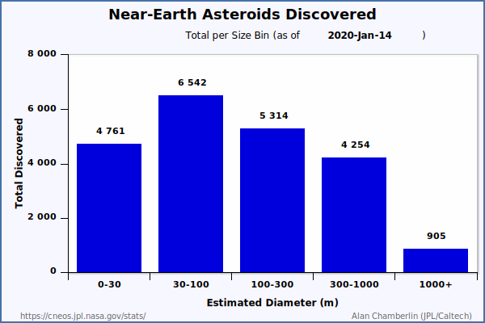

Статистика тел Солнечной системы
Центра Малых планет
- 246076778 наблюдений
- 857699 объектов всего
- 542163 нумерованных малых планет
- 311398 ненумерованных малых планет
- 4138 комет
- 22023 малых планет с именами
- 40 Атир, 1631 Атонов, 10981 Аполлонов, 9182 Амуров, 22409 астероидов семейства Венгрии, 16024 пересекающих орбиту Марса;
- 860428 астероидов основного пояса, 4302 астероидов семейства Хильды, 7751 троянцев Юпитера, 3717 объектов за орбитой Юпитера;
- 21836 околоземных астероидов, из них 909 больше 1 км, 2038 потенциально опасных астероидов, 109 околоземных комет.
Список транснептуновых объектов
Распределение малых планет, количество в зависимости от большой полуоси орбиты:



Альтернативная статистика Johnston's Archive:
Planets*: 8
Dwarf planets*: 5 (5 named)
Asteroids*: 850,018 (541,391 numbered, 308,627 provisional)
Outer solar system objects*: 3,577 (772 numbered, 2,771 provisional, 34 without official designations)
Comets**: 6,746 (386 numbered**, 3,653 with provisional designations, 2,707 without official designations)
* Note: Long-period comets with no official designation include: 2,092 SOHO comets, 89 STEREO comets, 70 other modern comets, and 456 pre-modern comets. The pre-modern comets typically have no computed orbits.
Статистика тел Солнечной системы
группы динамики Солнечной системы.
Последнее обновление: 2020-Jan-21.
- 209 спутников планет (включая Луну и спутники Плутона);
- 3607 комет, 473 numbered, 3134 unnumbered;
- 930729 астероидов, 542163 numbered, 388566 unnumbered.
Астероиды и кометы, измеренные при помощи радара
Asteroid radar research, NASA Jet Propulsion Laboratory, Caltech.
1081 Radar-Detected Asteroids and Comets.
Последнее обновление: 3 January 2020.
- 138 астероидов главного пояса,
- 922 околоземных астероидов,
- 21 комет.
Near-Earth Asteroid Files:


Астероиды со спутниками
by Wm.
Robert Johnston. Последнее обновление: 17 January 2020.
385 астероидов и транснептуновых объектов со спутниками:
369 двойных, 15 тройных систем, 1 шестерная система (Плутон);
404 компонентов всего:
- 73 околоземных астероидов (3 с двумя спутниками каждый).
- 28 астероидов, пересекающих орбиту Марса (1 с двумя спутниками).
- 172 астероидов главного пояса (9 с двумя спутниками каждый,
1 binary with dual comet designation).
- 6 троянских астероидов Юпитера.
- 106 транснептуновых объектов (2 с двумя спутниками,
1 с пятью спутниками; count excludes 1 object with rings).